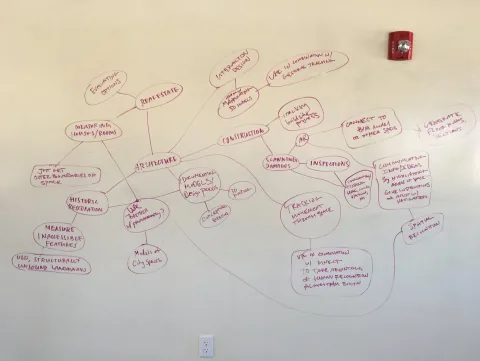
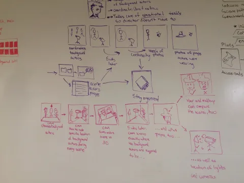
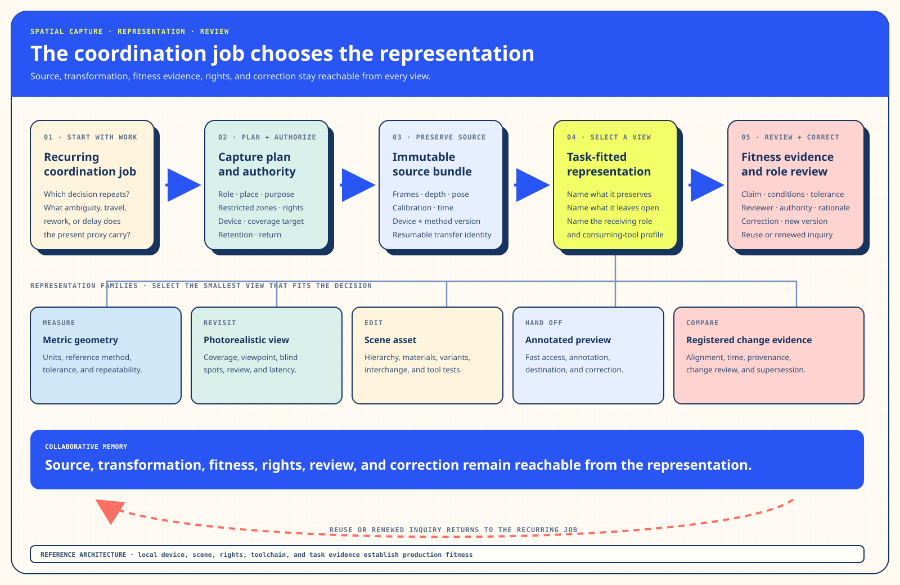

Track ISolution Architecture · Purpose and Changed WorkFind the recurring decision before selecting the representation.
I. Solution Architecture — From sensor discovery to collaborative spatial memory
§a Debrief — A Portable Sensor Opened a Wide Field
The original Structure Sensor attached a depth camera to an iPad. Scans, meshes, measurements, indoor maps, and spatial applications became portable enough to carry into clinics, workshops, interiors, and film sets. In Q1 2016, I worked with three other apprentices inside an agency of more than twenty people to explore where that capability could create durable value.
Interviews widened the field across medicine, engineering, construction, scenic work, film production, clothing, and retail. A dressmaker storyboard reached a useful dead end. Foot scanning exposed a recurrence question. Healthcare brought privacy, authority, and adoption conditions into view. Then one participant described taking more than ten thousand photographs while tracking extras on a film production. The photographs were preserving location, appearance, continuity, responsibility, and the possibility of returning later.
For an ordinary visitor, this is a familiar strain: people take extra photographs, repeat explanations, revisit places, and rely on memory when a shared record does not preserve the relationships they need. For scientific and technical communities, the same story asks which source, transformation, uncertainty, and fitness evidence lets a spatial artifact participate responsibly in a decision.
§b The Bottleneck — The Job Had to Choose the Representation
A compelling scanner can make many futures look equally vivid. “Three-dimensional capture” may mean measurable geometry, photorealistic revisit, an editable production asset, registered change, or a quick annotated preview. Each representation preserves a different truth and asks something different of the operator, reviewer, rights steward, receiving tool, and budget.




§c The Intervention — Match the Coordination Job to the Representation
The intervention is a selection system rather than a list of scanner features. It keeps plausible jobs visible long enough to compare them, then carries the strongest combination into a focused pilot. Five decisions stay connected: the recurring job and present proxy; the properties the representation must preserve; the people who capture, transform, review, secure, fund, and correct it; the rights and lifecycle conditions; and the evidence that would continue, reshape, or close the pilot.


§d The Outcome — Film Became an Earned, Testable Hypothesis
Film emerged after a broad interview field, several attractive branches, an attempted convergence, and the decision to widen again. The source-era recommendation positioned the sensor as a communication tool and proposed a small learning-oriented placement with permitted task feedback.
A contemporary pilot could focus on recurring decisions such as location review, art-department planning, continuity reference, or VFX capture. Its value would be established through the work it supports: capture burden, task-specific fitness, receiving-tool behavior, annotation and correction, rights and security, ambiguity, travel, rework, and reuse across another decision.
§e Repeatability — Choose the Job Before the Representation
- Name the recurring decision and the proxy people already use.
- Widen across roles, consequences, contexts, and plausible segments.
- Preserve dead ends and interview surprises as selection evidence.
- Distinguish metric, perceptual, editable, communicative, and temporal representations.
- Choose the smallest fitting representation with rights and lifecycle attached.
- Compare it with the current workflow through claim-specific evidence.
- Return use and correction to the source lineage.